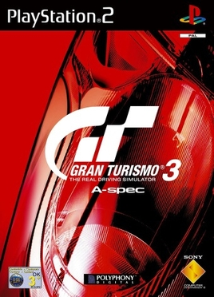
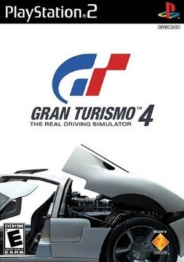
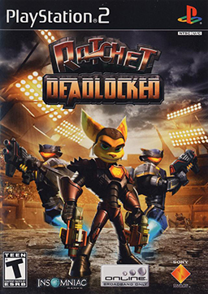

Gran Turismo
Gran Turismo 3: A-Spec

Release date: April 28, 2001
Genre: Racing
Developer: Polyphony Digital
Copies sold: 14.89 million
Award: Best Racing Game
Learn More
Gran Turismo Concept

Release date: January 1, 2002
Genre: Racing
Developer: Polyphony Digital
Copies sold: 1.56 million
Learn More
Gran Turismo 4

Release date: December 28, 2004
Genre: Racing
Developer: Polyphony Digital
Copies sold: 11.76 million
Award: Best Racing Game
Learn More
Ratchet & Clank
Ratchet & Clank (2002)

Release date: November 4, 2002
Genre: Platformer
Developer: Insomniac Games
Copies sold: 3.71 million
Award: Console Platform Action/Adventure Game of the Year
Learn More
Ratchet & Clank: Going Commando

Release date: November 11, 2003
Genre: Platformer
Developer: Insomniac Games
Copies sold: 2.966 million
Learn More
Ratchet & Clank: Up Your Arsenal

Release date: November 3, 2004
Genre: Platformer
Developer: Insomniac Games
Copies sold: 3.22 million
Award: Best Platformer
Learn More
Ratchet: Deadlocked

Release date: October 25, 2005
Genre: Action-platformer
Developer: Insomniac Games
Copies sold: 2.17 million
Learn More
Jak and Daxter
Jak and Daxter: The Precursor Legacy
Release date: December 3, 2001
Genre: Platformer
Developer: Naughty Dog
Copies sold: 4.2 million
Award: Best Platformer and Original Game Character of the Year (Daxter)
Learn More
Jak II

Release date: October 14, 2003
Genre: Action-platformer
Developer: Naughty Dog
Copies sold: 1.6 million
Award: Best Graphics
Learn More
Jak 3

Release date: November 9, 2004
Genre: Action-platformer
Developer: Naughty Dog
Copies sold: 1.33 million
Learn More